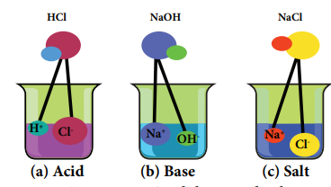
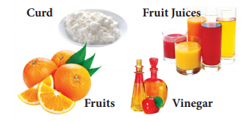
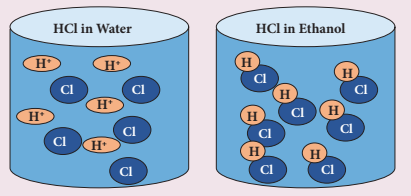
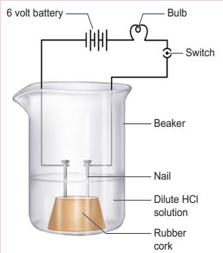
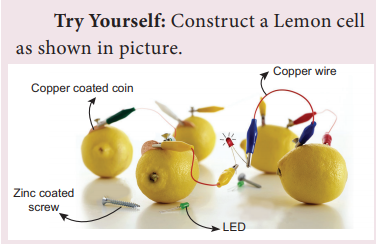
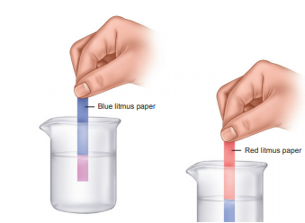
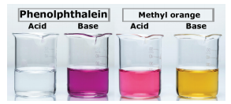
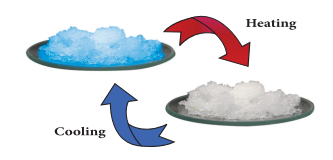

After completing this lesson, students will be able to
know about formation, properties and uses of acids, bases and salts.
know the importance of acids, bases and salts in daily life.
understand how to identify the nature of a solution by using indicators and pH paper.
know the strength of acid or base solutions.
define pH scale and explain the significance of pH in everyday life.
know aquaregia and its properties.
We know that the physical world around us is made of large number of chemicals. Soil, air, water, all the life forms and the materials that they use are all consist of chemicals. Out of such chemicals, acids, bases and salts are mostly used in everyday life. Let it be a fruit juice or a detergent or a medicine, they play a key role in our day-to-day activities. Our body metabolism is carried out by means of hydrochloric acid secreted in our stomach. An acid is a the compound which is capable of forming hydrogen ions Bracket OPENH plus bracket closed in aqueous solution whereas a base is a compound that forms hydroxyl ions Bracket OPENOH minus bracket closed in solution. When an acid and a base react with each other, a neutral product is formed which is called salt. In this lesson let us discuss about them in detail.
Figure 14.1 Acid, base and salt Image was given below

Look at the pictures of some of the materials used in our daily life, given below:
All these edible items taste similar That is, soar. What causes them to taste soar question mark A certain type of chemical compounds present in them gives soar taste. These are called acids. The word ‘acid’ is derived from the Latin name “acidus” which means sour taste. Substances with soar taste are called acids
Figure 14.2 Acid, base and salt in food image was given below

Table 14.1 Acid and its source
Source |
Acid Present |
Apple |
Malic acid |
Lemon |
Citric acid |
Grape |
Tartaric acid |
Tomato |
Oxalic acid |
Vinegar |
Acetic acid |
Curd |
Lactic acid |
Orange |
Ascorbic acid |
Tea |
Tannic acid |
Stomach juice |
Hydrochloric acid |
Stings of Ant, Bee |
Formic acid |
In 1884, a Swedish chemist Svante Arrhenius proposed a theory on acids and bases.According to Arrhenius theory, on acid is a substance which furnishes H plus ions or H3O plus ions in aqueous solution. They contain one or more replaceable hydrogen atoms. For example,when hydrogen chloride is dissolved in water, it gives H plus and Cl minus ions in water.
HCl Bracket OPEN aq bracket closed H plus Bracket OPEN aq bracket closed plus Cl minus Bracket OPEN aq bracket closed
What happens to an acid or a base in water question mark Do acids produce ions only in aqueous solution question mark Hydrogen ions in HCl are produced in the presence of water. The separation of H plus ion from HCl molecules cannot occur in the absence of water.
HCl plus H2 O gives H3O plus plus Cl minus
Hydrogen ions cannot exist alone, but they exist in combined state with water molecules. Thus, hydrogen ions must always be H plus Bracket OPEN or bracket closed Hydronium Bracket OPENH3 O plus bracket closed.
H plus plus H2O gives H3O plus
Box item OPEN
All acids essentially contain one or more hydrogens. But all the hydrogen containing substances are not acids. For example, methane Bracket OPEN CH4 bracket closed and ammonia Bracket OPEN NH3 bracket closed also contain hydrogen. But they do not produce H plus ions in aqueous solution box item ends
The following table enlists various acids and the ions formed by them in water.
Table 14.2 Ions formed by acids was given below
Acid |
Molecular Formula |
Ions formed |
Number of replaceable hydrogen |
|
Acetic Acid |
CH3 COOH |
H plus |
CH3 C O O minus |
1 |
Formic Acid |
H C O O H |
H plus |
H C O O minus |
1 |
Nitric Acid |
H N O3 |
H plus |
N O 3minus
|
1 |
Sulphuric Acid |
H2 SO4 |
2H plus |
S O4 2 minus |
2 |
Phosphoric Acid |
H3 P O 4 |
3H plus |
P O 4 3 minus |
3 |
Acids are classified in different ways as given below:
Organic Acids: Acids present in plants and animals Bracket OPEN living things bracket closed are organic acids.
Example: HCOOH, CH3 COOH
Inorganic Acids: Acids prepared from rocks and minerals are inorganic acids or mineral acids. Example: HCl, HNO3 H2 SO4
Monobasic Acid: Acid that contain only one replaceable hydrogen atom per molecule is called monobasic acid. It gives one hydrogen ion per molecule of the acid in solution. Example: HCl, HNO3
Box item OPEN
For acids, we use the term basicity that refers to the number of replaceable hydrogen atoms present in one molecule of an acid. For example, acetic acid Bracket OPEN CH3 COOH bracket closed has four hydrogen atoms but only one can be replaced. Hence it is monobasic. Box item ends
Dibasic Acid: An acid which gives two hydrogen ions per molecule of the acid in solution. Example: H2SO4 H2 CO3
Tribasic Acid: An acid which gives three hydrogen ions per molecule of the acid in solution.
Example: H3 PO4
Acids get ionised in water Bracket OPEN produce H plus ions bracket closed completely or partially. Based on the extent of ionisation acids are classified as below.
Strong Acids: These are acids that ionise completely in water. Example: HCl
Weak Acids: These are acids that ionise partially in water. Example: CH3 COOH.
Box item open
Ionisation is the condition of being dissociated into ions by heat or radiation or chemical reactions or electrical discharge. Box item ends
Concentrated Acid: It has relatively large amount of acid dissolved in a solvent.
Dilute Acid: It has relatively smaller amount of acid dissolved in solvent.
A bracket closed They have sour taste.
B bracket closed Their aqueous solutions conduct electricity since they contain ions.
C bracket closed Acids turns blue litmus red.
D bracket closed Acids react with active metals to give hydrogen gas. Mg plus H2 SO4 gives MgSO4 plus H2 gas
Zn plus 2HCl gives ZnCl2 plus H2 gas
Box item open
Few metals do not react with acid For example: Ag, Cu. Box item ends
E bracket closed Acids react with metal carbonate and metal hydrogen carbonate to give carbon dioxide.
Na2 C O3 plus 2HCl gives 2NaCl plus H2 O plus C O2 gas
NaHCO3 plus HCl gives NaCl plus H2 O plus C O2 gas
F bracket closed Acids react with metallic oxides to give salt and water.
CaO plus H2 SO4 gives CaSO4 plus H2 O
G bracket closed Acids react with bases to give salt and water.
HCl plus NaOH gives NaCl plus H2 O
The reaction is known as neutralisation reaction.
Box item open
Take about 10 ml of dilute hydrochloric acid in a test tube and add a few pieces of zinc granules into it. What do you observe question mark Why are bubbles formed in the solution question mark Take a burning candle near a bubble containing hydrogen gas, the flame goes off with a ‘Popping’ sound. This confirms that metal displaces hydrogen gas from the dilute acid. box item ends
Box item open
Caution: Care must be taken while mixing any concentrated inorganic acid with water. The acid must be added slowly and carefully with constant stirring to water since it generates large amount of heat. If water is added to acid, the mixture splashes out of the container and it may cause burns
box item ends
Sulphuric acid is called King of Chemicals because it is used in the preparation of many other compounds. It is used in car batteries also.
Hydrochloric acid is used as a cleansing agent in toilets.
Citric acid is used in the preparation of effervescent salts and as a food preservative.
Nitric acid is used in the manufacture of fertilizers, dyes, paints and drugs.
Oxalic acid is used to clean iron and manganese deposits from quartz crystals. It is also used as bleach for wood and removing black stains.
Carbonic acid is used in aerated drinks.
Tartaric acid is a constituent of baking powder.
Box item open
Acids show their properties only when dissolved in water. In water, they ionise to form H plus ions which determine the properties of acids. They do not ionise in organic solvents. For example, when HCl is dissolved in water it produces H plus ions and C l minus ions whereas in organic solvents like ethanol they do not ionise and remain as molecule. image was given below

Box item ends
We know that metals like gold and silver are not reactive with either HCl or HNO3 . But the mixture of these two acids can dissolve gold. This mixture is called Aquaregia. It is a mixture of hydrochloric acid and nitric acid prepared optimally in a molar ratio of 3 is to 1. It is a yellow-orange fuming liquid. It is a highly corrosive liquid, able to attack gold and other substances.
Chemical formula : 3 HCl plus HNO3
Solubility in Water : Miscible in water
Melting point minus 42 degree C Bracket OPEN minus 44 degree F, 231Kbracket closed
Boiling point 108 degree C Bracket OPEN226 degree F, 381Kbracket closed The term aquaregia is a Latin phrase meaning ‘King’s Water’. The name reflects the ability of aquaregia to dissolve the noble metals such as gold, platinum and palladium.
1. It is used chiefly to dissolve metals such as gold and platinum.
2. It is used for cleaning and refining gold.
According to Arrhenius theory, bases are substances that ionise in water to form hydroxyl ions Bracket OPEN O H minus bracket closed. There are some metal oxides which give salt and water on reaction with acids. These are also called bases. Bases that are soluble in water are called alkalis. A base reacts with an acid to give salt and water only.
Base plus Acid gives Salt plus Water
For example, zinc oxide Bracket OPEN ZnO bracket closed reacts with HCl to give the salt zinc chloride and water.
ZnO Bracket OPEN s bracket closed plus 2HCl Bracket OPEN aq bracket closed gives ZnCl2 Bracket OPEN aq bracket closed plus H2 O Bracket OPEN l bracket closed
Similarly, sodium hydroxide ionises in water to give hydroxyl ions and thus get dissolved in water. So it is an alkali.
NaOH Bracket OPEN aq bracket closed gives Na plus Bracket OPEN aq bracket closed plus OH minus Bracket OPEN aq bracket closed
Bases contain one or more replaceable oxide or hydroxyl ions in solution. Table 14.3 enlists various bases and ions formed by them in water.
Box item open
All alkalis are bases but not all bases are alkalis. For example: NaOH and KOH are alkalis whereas Al Bracket OPEN OH bracket closed 3 and Zn Bracket OPEN OH bracket closed 2 are bases. box item ends
Table14.3 Ions formed by bases in Water was given below
Base |
Molecular Formula |
Ions formed |
Number of Replaceable hydroxyl ion |
|
Calcium oxide |
CaO |
Ca2 plus |
O2 minus |
1 |
Sodium oxide |
Na2O |
Na plus |
O2 minus |
1 |
Potassium hydroxide |
KOH |
K plus |
OH minus |
1 |
Calcium hydroxide |
Ca Bracket OPEN OH bracket closed2 |
Ca2 plus |
OH minus |
2 |
Aluminium hydroxide |
A l Bracket OPEN OH bracket closed3 |
Al3 plus |
OH minus |
3 |
Monoacidic Base: It is a base that ionises in water to give one hydroxide ion per molecule. Example: NaOH, KOH
Diacidic Base: It is a base that ionises in water to give two hydroxide ions per molecule. Example: Ca Bracket OPEN O H bracket closed 2
Mg Bracket OPEN O H bracket closed2
Triacidic Base: It is a base that ionises in water to give three hydroxide ions per molecule. Example: A l Bracket OPEN O H bracket closed 3
Fe Bracket OPEN O H bracket closed 3
Bracket OPEN b bracket closed Based on concentration
Concentrated Alkali: It is an alkali having a relatively high percentage of alkali in its aqueous solution.
Dilute Alkali: It is an alkali having a relatively low percentage of alkali in its aqueous solution.
Bracket OPEN c bracket closed Based on Ionisation
Strong Bases: These are bases which ionise completely in aqueous solution.
Example: NaOH, KOH
Weak Bases: These are bases that ionise partially in aqueous solution.
Example: NH4 O H, Ca Bracket OPEN O H bracket closed2
Box item open
A bracket closed They have bitter taste.
B bracket closed Their aqueous solutions have soapy touch.
C bracket closed They turn red litmus blue.
D bracket closed Their aqueous solutions conduct electricity.
E bracket closed Bases react with metals to form salt with the liberation of hydrogen gas.
Zn plus 2 NaOH gives Na2 ZnO2 plus H2 gas
F bracket closed Bases react with non-metallic oxides to produce salt and water. Since this is similar to the reaction between a base and an acid, we can conclude that non metallic oxides are acidic in nature.
Ca Bracket OPEN O H bracket closed 2 plus C O2 gives Ca C O3 plus H2 O
G bracket closed Bases react with acids to form salt and water.
KOH plus HCl gives KCl plus H2 O
The above reaction between a base and an acid is known as Neutralisation reaction.
H bracket closed On heating with ammonium salts, bases give ammonia gas.
NaOH plus NH4 Cl gives NaCl plus H2 O plus NH3 gas
Box item open
Few metals do not react with sodium hydroxide. Example: Cu, Ag, Cr
Box item open ends
Box item open
Take solutions of hydrochloric acid or sulphuric acid. Fix two nails on a cork and place the cork in a 100 ml beaker. Connect the nails to the two terminals of a 6V battery through a bulb and a switch as shown in Figure. Now pour some dilute HCl in the beaker and switch on the current. Repeat the activity with dilute sulphuric acid, glucose and alcohol solutions. What do you observe now question mark Does the bulb glow in all cases question mark
Image was given below

Box item open ends
In the above activity you can observe that the bulb will start glowing only in the case of acids. But, you will observe that glucose and alcohol solution do not conduct electricity. Glowing of the bulb indicates that there is a flow of electric current through the solution. The electric current is carried through the solution by ions. Repeat the same activity using alkalis such as sodium hydroxide and calcium hydroxide.
Box item open
Try yourself image was given below

Box item ends
Bracket OPEN 1 bracket closed Sodium hydroxide is used in the manufacture of soap.
Bracket OPEN 2 bracket closed Calcium hydroxide is used in white washing of building.
Bracket OPEN 3 bracket closed Magnesium hydroxide is used as a medicine for stomach disorder.
Bracket OPEN 4 bracket closed Ammonium hydroxide is used to remove grease stains from cloths.
A bracket closed Test with a litmus paper:
An acid turns blue litmus paper into red. A base turns red litmus paper into blue.
B bracket closed Test with an indicator Phenolphthalein:
In acid medium, phenolphthalein is colourless. In basic medium, phenolphthalein is pink in colour.
Figure 14.3 Test for acid and base using litmus paper image was given below

C bracket closed Test with an indicator Methyl orange:
In acid medium, methyl orange is pink in colour. In basic medium, methyl orange is yellow in colour.
Figure 14.4 Test for acid and base using indicator image was given below

Table 14.4 Acid base indicator.was given below
Indicator |
Colour in acid |
Colour in base |
Litmus |
Blue to Red |
Red to Blue |
Phenolphthalein |
Colourless |
Pink |
Methyl orange |
Pink |
Yellow |
Box item open
Collect the following samples from the science laboratory – Hydrochloric acid, Sulphuric acid and Nitric acid, Sodium hydroxide, Potassium hydroxide. Take 2 ml of each solution in a test tube and test with a litmus paper and indicators phenolphthalein and Methyl orange. Tabulate your observations.
Sample Solutions |
Litmus Paper |
Indicators |
||
Blue |
Red |
Phenolphthalein |
Methyl Orange |
|
Hydrochloric acid |
|
|
|
|
Sulphuric acid |
|
|
|
|
Nitric acid |
|
|
|
|
Sodium hydroxide |
|
|
|
|
Potassium hydroxide |
|
|
|
|
Box item ends
A scale for measuring hydrogen ion concentration in a solution is called pH scale. The ‘p’ in pH stands for ‘potenz’ in German meaning power. pH scale is a set of numbers from 0 to 14 which is used to indicate whether a solution is acidic, basic or neutral.
Acids have pH less than 7
Bases have pH greater than 7
A neutral solution has pH equal to 7
When you say salt, you may think of the common salt. Sea water contains many salts dissolved in it. Sodium chloride is separated from these salts. There are many other salts used in other fields. Salts are the products of the reaction between acids and bases. Salts produce positive ions and negative ions when dissolved in water.
Acid plus base gives salt plus water
Normal Salts: A normal salt is obtained by complete neutralization of an acid by a base.
NaOH plus HCl gives NaCl plus H2 O
Acid Salts: It is derived from the partial replacement of hydrogen ions of an acid by a metal. When a calculated amount of a base is added to a polybasic acid, acid salt is obtained.
NaOH plus H2 SO4 gives NaHSO4 plus H2 O
Basic Salts: Basic salts are formed by the partial replacement of hydroxide ions of a diacidic or triacidic base with an acid radical.
Pb Bracket OPEN O H bracket closed2 plus HCl gives PbBracket OPEN O H bracket closed Cl plus H2 O
Double Salts: Double salts are formed by the combination of the saturated solution of two simple salts in equimolar ratio followed by crystallization. For example, potash alum is a mixture of potassium sulphate and aluminium sulphate. KAl Bracket OPEN SO4 bracket closed 2 12H2 O
Salts are mostly solids which melt as well as boil at high temperature.
Most of the salts are soluble in water. For example, chloride salts of potassium and sodium are soluble in water. But, silver chloride is insoluble in water
They are odourless, mostly white, cubic crystals or crystalline powder with salty taste.
Salt is hygroscopic in nature.
Many salts are found as crystals with water molecules. These water molecules are known as water of crystallisation. Salts that contain water of crystallisation are called hydrated salts. The number of molecules of water hydrated to a salt is indicated after a dot in its chemical formula. For example, copper sulphate crystal have five molecules of water for each molecule of copper sulphate. It is written as CuSO4 .5H2 O and named as copper sulphate pentahydrate. This water of crystallisation makes the copper sulphate blue. When it is heated, it loses its water molecules and becomes white.
Figure 6.7 Hydrated Salt image was given below

Salts that do not contain water of crystallisation are called anhydrous salt. They are generally found as powders. Fill in the blanks in the following table based on the concept of water of crystallisation
Box item open
Fill in the blanks in the following table based on the concept of water of crystallisation.a table was given below
Salt |
Formula of anhydrous salt |
Formula of hydrated salt |
Name of hydrated salt |
Zinc sulphate |
ZnSO4 |
ZnSO4. 7H2O |
nil |
Magnesium chloride |
MgCl2 |
|
Magnesium chloride hexahydrate |
Iron Bracket OPEN II bracket closed sulphate |
nil |
F e SO4.7H2O |
Iron Bracket OPEN 2 bracket closed sulphate heptahydrate |
Calcium chloride |
CaCl2 |
CaCl2.2H2O |
nil |
Sodium thiosulphate |
Na2S2O3 |
nil |
Sodium thiosulphate pentahydrate |
Box item ends
The physical examination of the unknown salt involves the study of colour, smell and density. This test is not much reliable.
This test is performed by heating a small amount of salt in a dry test tube. After all the water get evaporated, the dissolved salts are sedimented in the container.
Certain salts on reacting with concentrated hydrochloric acid Bracket OPEN HCl bracket closed form their chlorides. The paste of the mixture with concentrated HCl is introduced into the flame with the help of platinum wire.
Colour of the flame |
Inference |
Brick red |
Ca2 plus |
Golden Yellow |
Na plus |
Pink Violet |
K plus |
Green Fleshes |
Zn2 plus |
Bracket OPEN 4 bracket closed When HCl is added with a carbonate salt, it gives off C O 2 gas with brisk effervescence.
Common Salt Bracket OPEN Sodium Chloride – NaCl Bracket closed
It is used in our daily food and used as a preservative.
Washing Soda Bracket OPEN Sodium Carbonate-Na2C O3 bracket closed
1. It is used in softening hard water.
2. It is used in glass, soap and paper industries.
Baking Soda Bracket OPEN Sodium bicarbonate -NaHCO3 bracket closed
1. It is used in making of baking powder which is a mixture of baking soda and tartaric acid.
2. It is used in soda-acid fire extinguishers.
3. Baking powder is used to make cakes and bread, soft and spongy.
4. It neutralizes excess acid in the stomach and provides relief.
Bleaching powder Bracket OPEN Calcium Oxychloride -C a O Cl2 bracket closed
1. It is used as disinfectant.
2. It is used in textile industry for bleaching cotton and linen.
Plaster of Paris Bracket OPEN Calcium Sulphate Hemihydrate – Ca SO4 1 by 2 H2 O bracket closed
1. It is used for plastering bones.
2. It is used for making casts for statues.
Box item open
Boil about 100 ml of ground water in a vessel to dryness. After all the water get evaporated observe the inner wall of the vessel. Can you observe any deposits question mark This is the deposit of dissolved salts present in water box item ends
Acid is a substance which furnishes H plus ions or H3 O plus ions when dissolved in water.
Base is a substance which releases O H minus ions when dissolved in water.
Salt is the product of reaction between acids and bases.
Acids and bases neutralize each other to form corresponding salts and water.
Salts have various uses in everyday life.
Acidic and basic solutions in water conduct electricity because they produce hydrogen and hydroxide ions respectively
When an acid reacts with a metal, hydrogen gas is evolved and a corresponding salt is formed.
Phenolphthalein and Methyl orange are used as indicators to find out whether the given solution is acid or base.
Litmus paper is also used to find out whether the given solution is acid or base.
pH paper is used to find out the given solution whether acidic or basic in nature.
Aquaregia is a mixture of hydrochloric acid and nitric acid optimally in a molar ratio of 3 is to 1
pH Scale is used to find out the power of hydrogen ion concentration in a solution.
Acids Substance which furnishes H plus ions H3 O plus ions when dissolved in water.
Bases Substance which furnishes O H- ions when dissolved in water.
Salts Product of reaction between acids and bases.
Indicators Chemical substances used to find out whether the given solution is acid or base.
P H Scale Scale used to find out Hydrogen ion concentration in a solution.
pH Paper Paper used to find out whether the given solution is acidic or basic or neutral in nature.
Aquaregia Mixture of hydrochloric acid and nitric acid prepared optimally in a molar ratio of 3 is to 1.
Hygroscopic substance Substance which absorbs water from the surroundings.